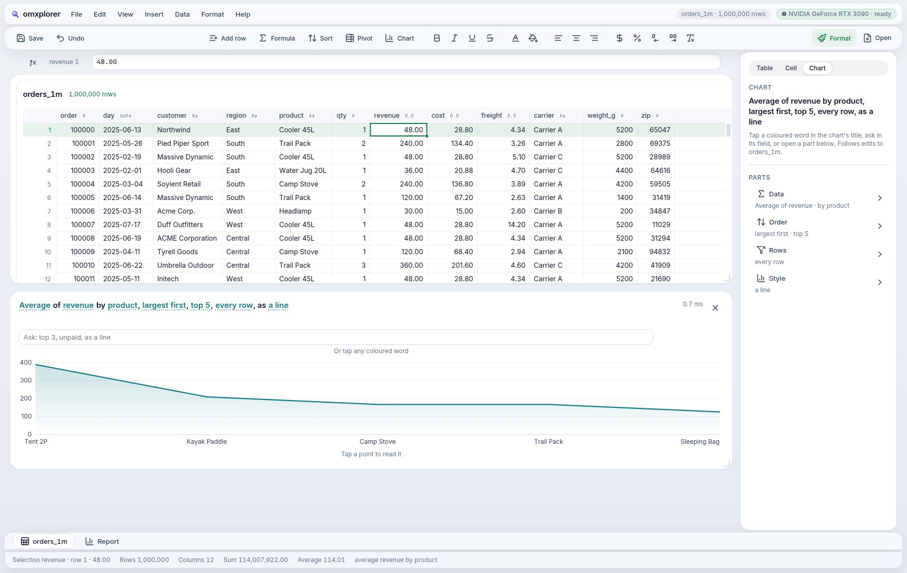

A data workspace where a million rows answer in under a millisecond, on your own GPU, and every button is a tool your AI agent can call. Written in Mojo, from the button to the GPU kernel.
A real recording: change a word, and a million rows are recomputed on the GPU.
NVIDIA RTX 3090 · the repo's own checks re-run each number · chart 0.5–0.7 ms, grid p95, the 100M dashboard is goal 38's median of medians (Rust + Polars 37.0, JS + DuckDB 104.9) · honest edge: a 100M-row median chart takes about 0.7 s
“Sum of revenue by product, top 5, as bars.” Every coloured word is a setting. Tap one, or type “median”, and the bars move to the new answer.
omxplorer is an MCP server from the first line. An agent calls what a person can tap, and nothing more.
Group-bys, medians and charts run as GPU kernels in omxcore, linked in like SQLite.
Open CSV and Parquet straight from disk. Big files stream in, so the first rows show in 0.2 s.
Linux, the web, Android and Mac from the same Mojo. iPhone builds; it hasn't run on a phone yet.
Click the slides, then use the arrow keys. Code steps line by line; the architecture moves as a tap runs.
Sum of revenue by product, largest first, top 5, as bars

Most apps meet AI agents through screenshots and guesswork. In omxplorer, every control your hands can reach, an agent can call. A disabled button is no tool.
→ choose-a-file {"path": "orders_1m.csv"} → create-table → insert-chart → ask {"text": "revenue by product, largest first, top 5"} ← Now: chart0: 0.6 ms
scripts/agent.shOpen a video and it turns into a table you can ask, like any CSV: about 400 frames a second, on your GPU. Ask for a reel, and the rows cut it.